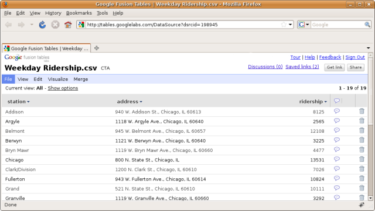

©2010 Google -
Code Home -
Terms of Service -
Privacy Policy -
Site Directory
Google Code offered in:
English -
Español -
日本語 -
한국어 -
Português -
Pусский -
中文(简体) -
中文(繁體)
Maps Javascript API V3
- Home Page
- API Reference
Code Samples:
More Resources:
Maps Javascript API V2
(Deprecated API)
Maps API for Flash
Maps Data API
(Deprecated API)
Static Maps API
Earth API
Local Search API
(Deprecated API)
Same great maps plus a SLA, support, and control over ads
Google Maps Javascript API V3 Overlays
Note: The Google Maps Javascript API Version 3 documented within these pages is now the official Javascript API. Version 2 of this API has been officially deprecated as per our deprecation policy. We encourage you to migrate your code to this newly updated and enhanced version!
Overlays Overview
Overlays are objects on the map that are tied to latitude/longitude coordinates, so they move when you drag or zoom the map. Overlays reflect objects that you "add" to the map to designate points, lines, areas, or collections of objects.
The Maps API has several types of overlays:
- Single locations on the map are displayed using
markers. Markers may sometimes display custom
icon images, in which case they are usually referred to
as "icons." Markers and icons are objects of type
Marker. (For more information, see Markers and Icons below.) - Lines on the map are displayed using polylines
(representing an ordered sequence of locations). Lines are objects
of type
Polyline. (For more information, see Polylines.) - Areas of arbitrary shape on the map are displayed using
polygons , which are similar to polylines. Like polylines, polygons are an ordered sequence of locations; unlike polylines, polygons define a region which they enclose. (For more information, see Polygons below.) - Map layers may be displayed using overlay map types. You can create your own set of tiles by creating custom map types which either replace base map tile sets, or display on top of existing base map tile sets as overlays. (For more information, see Custom Map Types.
- The info window is also a special kind of overlay for displaying content (usually text or images) within a popup balloon on top of a map at a given location. (For more information, see Info Windows.)
- You may also implement your own custom overlays. These
custom overlays implement the
OverlayViewinterface. (For more information, see Custom Overlays.)
Adding Overlays
Overlays are often added to the map upon their construction;
all overlays define an Options object for use in construction
that allows you to designate the map on which they should appear.
You may also add an overlay to the map directly by using the overlay's
setMap() method, passing it the map on which to add
the overlay.
var myLatlng = new google.maps.LatLng(-25.363882,131.044922);
var myOptions = {
zoom: 4,
center: myLatlng,
mapTypeId: google.maps.MapTypeId.ROADMAP,
}
var map = new google.maps.Map(document.getElementById("map_canvas"), myOptions);
var marker = new google.maps.Marker({
position: myLatlng,
title:"Hello World!"
});
// To add the marker to the map, call setMap();
marker.setMap(map);
Removing Overlays
To remove an overlay from a map, call the overlay's
setMap() method, passing null. Note that
calling this method does not delete the overlay; it simply removes
the overlay from the map. If instead you wish to delete the overlay,
you should remove it from the map, and then set the
overlay itself to null.
If you wish to manage a set of overlays, you should create
an array to hold the overlays. Using this array, you can then call
setMap() on each overlay in the array when you need to
remove them. (Note that unlike in V2, no clearOverlays()
method exists; you are responsible for keeping track of your overlays
and removing them from the map when not needed.) You can delete
the overlays by removing them from the map and then setting the
array's length to 0, which removes all
references to the overlays.
The following example places markers on a map when clicked on the map, and places them within an array. The overlays can then be later cleared, shown, or deleted:
var map;
var markersArray = [];
function initialize() {
var haightAshbury = new google.maps.LatLng(37.7699298, -122.4469157);
var mapOptions = {
zoom: 12,
center: haightAshbury,
mapTypeId: google.maps.MapTypeId.TERRAIN
};
map = new google.maps.Map(document.getElementById("map_canvas"), mapOptions);
google.maps.event.addListener(map, 'click', function(event) {
addMarker(event.latLng);
});
}
function addMarker(location) {
marker = new google.maps.Marker({
position: location,
map: map
});
markersArray.push(marker);
}
// Removes the overlays from the map, but keeps them in the array
function clearOverlays() {
if (markersArray) {
for (i in markersArray) {
markersArray[i].setMap(null);
}
}
}
// Shows any overlays currently in the array
function showOverlays() {
if (markersArray) {
for (i in markersArray) {
markersArray[i].setMap(map);
}
}
}
// Deletes all markers in the array by removing references to them
function deleteOverlays() {
if (markersArray) {
for (i in markersArray) {
markersArray[i].setMap(null);
}
markersArray.length = 0;
}
}
View example (overlay-remove.html)
Markers
Markers identify locations on the map. By default, they use
a standard icon, though you can set a custom icon within the marker's
constructor or by calling setIcon() on the marker. The
google.maps.Marker constructor takes a single
Marker options object literal specifying the initial
properties of the marker. The following fields are particularly
important and commonly set when constructing your marker:
position(required) specifies aLatLngidentifying the initial location of the marker.map(optional) specifies theMapobject on which to place the marker.
Note that within the Marker constructor, you should
specify the map on which to add the marker. If you do not specify this
argument, the marker is created but is not attached (or displayed) on the map.
You may add the marker later by calling the marker's
setMap() method. To remove a marker, call the setMap()
method passing null as the argument.
Markers are designed to be interactive. By default, they
receive 'click' events, for example, and are often
used within event listeners to bring up info windows.
var myLatlng = new google.maps.LatLng(-25.363882,131.044922);
var myOptions = {
zoom: 4,
center: myLatlng,
mapTypeId: google.maps.MapTypeId.ROADMAP
}
var map = new google.maps.Map(document.getElementById("map_canvas"), myOptions);
var marker = new google.maps.Marker({
position: myLatlng,
map: map,
title:"Hello World!"
});
This Marker title will show up as a tooltip.
If you do not wish to pass any Marker options in the marker's constructor,
instead pass an empty object {} in the last argument of the constructor.
View example (marker-simple.html)
Icons
Markers may define an icon to show in place of the default icon. Defining an icon involves setting a number of properties that define the visual behavior of the marker.
Simple Icons
In the most basic case, an icon can simply indicate an image to
use instead of the default Google Maps pushpin icon by setting
the marker's icon property to the URL of an image.
The Google Maps API will size the icon automatically in this case.
In the example below, we create an icon to signify the position of Bondi Beach in Sydney, Australia:
function initialize() {
var myLatlng = new google.maps.LatLng(-25.363882,131.044922);
var myOptions = {
zoom: 4,
center: myLatlng,
mapTypeId: google.maps.MapTypeId.ROADMAP
}
var map = new google.maps.Map(document.getElementById("map_canvas"), myOptions);
var image = 'beachflag.png';
var myLatLng = new google.maps.LatLng(-33.890542, 151.274856);
var beachMarker = new google.maps.Marker({
position: myLatLng,
map: map,
icon: image
});
}
View example (icon-simple.html)
Complex Icons
More complex icons will want to specify complex shapes (which
indicate regions that are clickable), add shadow images, and specify
the "stack order" of how they should display relative to
other overlays. Icons specifed in this manner should
set their icon and shadow properties to an
object of type MarkerImage.
Shadow images should generally be created at a 45 degree angle (upward and to the right) from the main image, and the bottom left corner of the shadow image should align with the bottom-left corner of the icon image. Shadow images should be 24-bit PNG images with alpha transparency so that image boundaries appear correctly on the map.
MarkerImage objects not only define an image, but also
define the size of the icon, the origin
of the icon (if the image you want is part of a larger image in a sprite,
for example), and the anchor where the icon's hotspot
should be located (which is based on the origin).
The following example creates complex markers to signify beaches near
Sydney, NSW, Australia. Note that the anchor is set to
(0,32) to correspond to the base of the flagpole.
function initialize() {
var myOptions = {
zoom: 10,
center: new google.maps.LatLng(-33.9, 151.2),
mapTypeId: google.maps.MapTypeId.ROADMAP
}
var map = new google.maps.Map(document.getElementById("map_canvas"),
myOptions);
setMarkers(map, beaches);
}
/**
* Data for the markers consisting of a name, a LatLng and a zIndex for
* the order in which these markers should display on top of each
* other.
*/
var beaches = [
['Bondi Beach', -33.890542, 151.274856, 4],
['Coogee Beach', -33.923036, 151.259052, 5],
['Cronulla Beach', -34.028249, 151.157507, 3],
['Manly Beach', -33.80010128657071, 151.28747820854187, 2],
['Maroubra Beach', -33.950198, 151.259302, 1]
];
function setMarkers(map, locations) {
// Add markers to the map
// Marker sizes are expressed as a Size of X,Y
// where the origin of the image (0,0) is located
// in the top left of the image.
// Origins, anchor positions and coordinates of the marker
// increase in the X direction to the right and in
// the Y direction down.
var image = new google.maps.MarkerImage('images/beachflag.png',
// This marker is 20 pixels wide by 32 pixels tall.
new google.maps.Size(20, 32),
// The origin for this image is 0,0.
new google.maps.Point(0,0),
// The anchor for this image is the base of the flagpole at 0,32.
new google.maps.Point(0, 32));
var shadow = new google.maps.MarkerImage('images/beachflag_shadow.png',
// The shadow image is larger in the horizontal dimension
// while the position and offset are the same as for the main image.
new google.maps.Size(37, 32),
new google.maps.Point(0,0),
new google.maps.Point(0, 32));
// Shapes define the clickable region of the icon.
// The type defines an HTML <area> element 'poly' which
// traces out a polygon as a series of X,Y points. The final
// coordinate closes the poly by connecting to the first
// coordinate.
var shape = {
coord: [1, 1, 1, 20, 18, 20, 18 , 1],
type: 'poly'
};
for (var i = 0; i < locations.length; i++) {
var beach = locations[i];
var myLatLng = new google.maps.LatLng(beach[1], beach[2]);
var marker = new google.maps.Marker({
position: myLatLng,
map: map,
shadow: shadow,
icon: image,
shape: shape,
title: beach[0],
zIndex: beach[3]
});
}
}
View example (icon-complex.html)
Polylines
The Polyline class defines a linear overlay of connected
line segments on the map. A Polyline object consists of an array of
LatLng locations, and creates a series of line segments that
connect those locations in an ordered sequence.
Polyline Options
The Polyline constructor takes a set of
Polyline options specifying the LatLng
coordinates of the line and a set of styles to adjust the polyline's
visual behavior.
Polylines are drawn as a series of straight segments on the
map. You can specify custom colors, weights, and opacities for the stroke of
the line within a Polyline options object used when
constructing your line, or change those properties after construction. A
polyline supports the following stroke styles:
strokeColorspecifies a hexadecimal HTML color of the format"#FFFFFF". ThePolylineclass does not support named colors.strokeOpacityspecifies a numerical fractional value between0.0and1.0(default) of the opacity of the line's color.strokeWeightspecifies the weight of the line's stroke in pixels.
The following code snippet creates a 2-pixel-wide red polyline connecting the path of William Kingsford Smith's first trans-Pacific flight between Oakland, CA and Brisbane, Australia:
function initialize() {
var myLatLng = new google.maps.LatLng(0, -180);
var myOptions = {
zoom: 3,
center: myLatLng,
mapTypeId: google.maps.MapTypeId.TERRAIN
};
var map = new google.maps.Map(document.getElementById("map_canvas"),
myOptions);
var flightPlanCoordinates = [
new google.maps.LatLng(37.772323, -122.214897),
new google.maps.LatLng(21.291982, -157.821856),
new google.maps.LatLng(-18.142599, 178.431),
new google.maps.LatLng(-27.46758, 153.027892)
];
var flightPath = new google.maps.Polyline({
path: flightPlanCoordinates,
strokeColor: "#FF0000",
strokeOpacity: 1.0,
strokeWeight: 2
});
flightPath.setMap(map);
}
View example (polyline-simple.html)
Polyline Arrays
A polyline specifies a series of coordinates as an array of
LatLng objects. To retrieve these coordinates, call
the Polyline's getPath(), which will
return an array of type MVCArray. As such, you can
manipulate and inspect the array using the following operations:
getAt()returns theLatLngat a given zero-based index value.insertAt()inserts a passedLatLngat a given zero-based index value. Note that any existing coordinates at that index value are moved forward.removeAt()removes aLatLngat a given zero-based index value.
Note: you cannot simply retrieve
the ith element of an array by using the syntax
mvcArray[i]; you must use
mvcArray.getAt(i).
The following code creates an interactive map which constructs a
polyline based on user clicks. Note that the polyline only appears
once its path property contains two LatLng
coordinates.
var poly;
var map;
function initialize() {
var chicago = new google.maps.LatLng(41.879535, -87.624333);
var myOptions = {
zoom: 7,
center: chicago,
mapTypeId: google.maps.MapTypeId.ROADMAP
};
map = new google.maps.Map(document.getElementById('map_canvas'), myOptions);
var polyOptions = {
strokeColor: '#000000',
strokeOpacity: 1.0,
strokeWeight: 3
}
poly = new google.maps.Polyline(polyOptions);
poly.setMap(map);
// Add a listener for the click event
google.maps.event.addListener(map, 'click', addLatLng);
}
/**
* Handles click events on a map, and adds a new point to the Polyline.
* @param {MouseEvent} mouseEvent
*/
function addLatLng(event) {
var path = poly.getPath();
// Because path is an MVCArray, we can simply append a new coordinate
// and it will automatically appear
path.push(event.latLng);
// Add a new marker at the new plotted point on the polyline.
var marker = new google.maps.Marker({
position: event.latLng,
title: '#' + path.getLength(),
map: map
});
}
View example (polyline-complex.html)
Polygons
Polygon objects are similar to Polyline
objects in that they consist of a series of coordinates in an ordered
sequence. However, instead of being open-ended, polygons are designed
to define regions within a closed loop. Similar to polylines, they
allow you to define a stroke, which affects the outline of the
polygon; unlike polylines, they also allow you to define a fill
region inside the polygon.
Additionally, Polygons may potentially exhibit complex
shapes, including discontinuities (multiple polygons defined as one
polygon), "donuts" (where polygonal areas appear inside the polygon as
"islands") and intersections of one or more polygons. For this reason,
a single polygon may specify multiple paths.
Polygon Options
As with polylines, you can define custom colors, weights, and opacities for the edge of the polygon (the "stroke") and custom colors and opacities for the area within the enclosed region (the "fill"). Colors should be indicated in hexadecimal numeric HTML style.
Because a polygonal area may include several separate paths, the
Polygon object's paths property specifies
an "array of arrays," (each of type MVCArray) where
each array defines a separate sequence of ordered LatLng
coordinates.
However, for simple polygons consisting of only one path, you may
construct a Polygon using a single array of
LatLng coordinates as a convenience. The
Google Maps API will convert this simple array into an "array of
arrays" upon construction when storing it within the
Polygon's paths property. As well, the
API provides a simple getPath() methods for simple
polygons consisting of one path.
Note: if you construct a polygon
in this manner, you will still need to retrieve values from the
polygon by manipulating the path as an MVCArray.
The following code snippet creates a polygon representing the Bermuda Triangle:
function initialize() {
var myLatLng = new google.maps.LatLng(24.886436490787712, -70.2685546875);
var myOptions = {
zoom: 5,
center: myLatLng,
mapTypeId: google.maps.MapTypeId.TERRAIN
};
var bermudaTriangle;
var map = new google.maps.Map(document.getElementById("map_canvas"),
myOptions);
var triangleCoords = [
new google.maps.LatLng(25.774252, -80.190262),
new google.maps.LatLng(18.466465, -66.118292),
new google.maps.LatLng(32.321384, -64.75737),
new google.maps.LatLng(25.774252, -80.190262)
];
// Construct the polygon
// Note that we don't specify an array or arrays, but instead just
// a simple array of LatLngs in the paths property
bermudaTriangle = new google.maps.Polygon({
paths: triangleCoords,
strokeColor: "#FF0000",
strokeOpacity: 0.8,
strokeWeight: 2,
fillColor: "#FF0000",
fillOpacity: 0.35
});
bermudaTriangle.setMap(map);
}
View example (polygon-simple.html)
Polygon Auto-Completion
The Polygon in the example above consists of four
coordinates, but notice that the first and last coordinate are the
same location, which defines the loop. In practice, however, since
polygons define closed areas, you don't need to define this last
coordinate. The Maps API will automatically "close" any polygons by
drawing a stroke connecting the last coordinate back to the first
coordinate for any given paths.
The following example is identical to the first example except that the last coordinate is omitted.
View example (polygon-autoclose.html)
Polygon Arrays
A polygon specifies its series of coordinates as an array
of arrays, where each array is of type MVCArray. Each
"leaf" array is an array of LatLng coordinates
specifying a single path. To retrieve these coordinates, call the
Polygon's getPaths() method. Since the
array is an MVCArray you will need to manipulate and
inspect it using the following operations:
getAt()returns theLatLngat a given zero-based index value.insertAt()inserts a passedLatLngat a given zero-based index value. Note that any existing coordinates at that index value are moved forward.removeAt()removes aLatLngat a given zero-based index value.
Note: you cannot simply retrieve
the ith element of an array by using the syntax
mvcArray[i]; you must use
mvcArray.getAt(i).
The following code handles click events on the polygon by displaying information on the polygon's coordinates:
var map;
var infoWindow;
function initialize() {
var myLatLng = new google.maps.LatLng(24.886436490787712, -70.2685546875);
var myOptions = {
zoom: 5,
center: myLatLng,
mapTypeId: google.maps.MapTypeId.TERRAIN
};
var bermudaTriangle;
map = new google.maps.Map(document.getElementById("map_canvas"),
myOptions);
var triangleCoords = [
new google.maps.LatLng(25.774252, -80.190262),
new google.maps.LatLng(18.466465, -66.118292),
new google.maps.LatLng(32.321384, -64.75737)
];
bermudaTriangle = new google.maps.Polygon({
paths: triangleCoords,
strokeColor: "#FF0000",
strokeOpacity: 0.8,
strokeWeight: 3,
fillColor: "#FF0000",
fillOpacity: 0.35
});
bermudaTriangle.setMap(map);
// Add a listener for the click event
google.maps.event.addListener(bermudaTriangle, 'click', showArrays);
infowindow = new google.maps.InfoWindow();
}
function showArrays(event) {
// Since this Polygon only has one path, we can call getPath()
// to return the MVCArray of LatLngs
var vertices = this.getPath();
var contentString = "<b>Bermuda Triangle Polygon</b><br />";
contentString += "Clicked Location: <br />" + event.latLng.lat() + "," + event.latLng.lng() + "<br />";
// Iterate over the vertices.
for (var i =0; i < vertices.length; i++) {
var xy = vertices.getAt(i);
contentString += "<br />" + "Coordinate: " + i + "<br />" + xy.lat() +"," + xy.lng();
}
// Replace our Info Window's content and position
infowindow.setContent(contentString);
infowindow.setPosition(event.latLng);
infowindow.open(map);
}
View example (polygon-arrays.html)
Ground Overlays
Polygons are useful overlays to represent arbitrarily-sized areas, but they
cannot display images. If you have an image that you wish to place on a map,
you can use a GroundOverlay object. The constructor for a
GroundOverlay specifies a URL of an image and the
LatLngBounds of the image as parameters. The image will be
rendered on the map, constrained to the given bounds, and conformed
using the map's projection.
The following example places an antique map of Newark, NJ on the map as an overlay:
var newark = new google.maps.LatLng(40.740, -74.18);
var imageBounds = new google.maps.LatLngBounds(
new google.maps.LatLng(40.716216,-74.213393),
new google.maps.LatLng(40.765641,-74.139235));
var myOptions = {
zoom: 13,
center: newark,
mapTypeId: google.maps.MapTypeId.ROADMAP
}
var map = new google.maps.Map(document.getElementById("map_canvas"), myOptions);
var oldmap = new google.maps.GroundOverlay(
"http://www.lib.utexas.edu/maps/historical/newark_nj_1922.jpg",
imageBounds);
oldmap.setMap(map);
View example (groundoverlay-simple.html)
Info Windows
InfoWindows displays content in a floating window above
the map. The info window looks a little like a comic-book word
balloon; it has a content area and a tapered stem, where the tip of the
stem is at a specified location on the map. You can see the info window in
action by clicking business markers on Google Maps.
The InfoWindow constructor takes an InfoWindow options
object, which specifies a set of initial parameters for
display of the info window. Upon creation, an info window is not added
to the map. To make the info window visible, you need to call the
open() method on the InfoWindow, passing it
the Map on which to open, and optionally,
the Marker with which to anchor it. (If no
marker is provided, the info window will open at its position
property.)
The InfoWindow options object is an object literal
containing the following fields:
contentcontains either a string of text or DOM node to display within the info window when it is opened.pixelOffsetcontains an offset from the tip of the info window to the location on which the info window is anchored. In practice, you should not need to modify this field.positioncontains theLatLngat which this info window is anchored. Note that opening an info window on a marker will automatically update this value with a new position.maxWidthspecifies the maximum width in pixels of the info window. By default, an info window expands to fit its content, and auto-wraps text if the info window expands to fill the map. If you implement amaxWidththe info window will auto-wrap to enforce the pixel width. Once it reaches the maximum width, the info window may still expand vertically if screen real estate is available.
The InfoWindow's content may contain either a
string of text, a snippet of HTML, or a DOM element itself.
To set this content, either pass it within
the InfoWindow options constructor or call
setContent() on the InfoWindow explicitly. If you wish to
explicitly size the content, you may use <div>s to
do so, and enable scrolling if you wish. Note that if you do not enable
scrolling and the content exceeds the space available in an
info window, the content may "spill" out of the info window.
InfoWindows may be attached to either Marker
objects (in which case their position is based on the marker's location) or
on the map itself at a specified LatLng. If you only want one
info window to display at a time (as is the behavior on Google Maps),
you need only create one info window, which you can reassign to
different locations or markers upon map events (such as user clicks). Unlike
behavior in V2 of the Google Maps API, however, a map may now display multiple
InfoWindow objects if you so choose.
To change the info window's location you may either change its position
explicitly by calling setPosition() on the info window,
or by attaching it to a new marker using the InfoWindow.open()
method. Note that if you call open() without passing a marker,
the InfoWindow will use the position specified upon construction
through the InfoWindow options object.
The following code displays a marker within the center of Australia. Clicking on that marker shows the info window.
var myLatlng = new google.maps.LatLng(-25.363882,131.044922);
var myOptions = {
zoom: 4,
center: myLatlng,
mapTypeId: google.maps.MapTypeId.ROADMAP
}
var map = new google.maps.Map(document.getElementById("map_canvas"), myOptions);
var contentString = '<div id="content">'+
'<div id="siteNotice">'+
'</div>'+
'<h1 id="firstHeading" class="firstHeading">Uluru</h1>'+
'<div id="bodyContent">'+
'<p><b>Uluru</b>, also referred to as <b>Ayers Rock</b>, is a large ' +
'sandstone rock formation in the southern part of the '+
'Northern Territory, central Australia. It lies 335 km (208 mi) '+
'south west of the nearest large town, Alice Springs; 450 km '+
'(280 mi) by road. Kata Tjuta and Uluru are the two major '+
'features of the Uluru - Kata Tjuta National Park. Uluru is '+
'sacred to the Pitjantjatjara and Yankunytjatjara, the '+
'Aboriginal people of the area. It has many springs, waterholes, '+
'rock caves and ancient paintings. Uluru is listed as a World '+
'Heritage Site.</p>'+
'<p>Attribution: Uluru, <a href="http://en.wikipedia.org/w/index.php?title=Uluru&oldid=297882194">'+
'http://en.wikipedia.org/w/index.php?title=Uluru</a> (last visited June 22, 2009).</p>'+
'</div>'+
'</div>';
var infowindow = new google.maps.InfoWindow({
content: contentString
});
var marker = new google.maps.Marker({
position: myLatlng,
map: map,
title:"Uluru (Ayers Rock)"
});
google.maps.event.addListener(marker, 'click', function() {
infowindow.open(map,marker);
});
View example (infowindow-simple.html)
An example with the info window maxWidth set to 200 pixels appears below:
View example (infowindow-simple-max.html)
Layers Overview
Layers are objects on the map that consist of one or more separate items, but are manipulated as a single unit. Layers generally reflect collections of objects that you add on top of the map to designate a common association. The Maps API manages the presentation of objects within layers by rendering their constituent items into one object (typically a tile overlay) and displaying them as the map's viewport changes. Layers may also alter the presentation layer of the map itself, slightly altering the base tiles in a fashion consistent with the layer. Note that most layers, by design, may not be accessed via their individual objects, but may only be manipulated as a unit.
To add a layer to a map, you only need to call
setMap(), passing it the map object on which
to display the layer. Similarly, to hide a layer, call
setMap(), passing null.
The Maps API has several types of layers:
KmlLayerobjects render KML and GeoRSS elements into a Maps API V3 tile overlay.FusionTablesLayerobjects render data contained in Google Fusion Tables.- The
TrafficLayerobject renders a layer depicting traffic conditions and overlays representing traffic. - The
BicyclingLayerobject renders a layer of bike paths and/or bicycle-specific overlays into a common layer. This layer is returned by default within theDirectionsRendererwhen requesting directions of travel modeBICYCLING.
These layers are described below.
KML and GeoRSS Layers
The Google Maps API supports the KML and GeoRSS data formats
for displaying geographic information. These data formats are displayed
on a map using a KmlLayer object, whose constructor takes
the URL of a publicly accessible KML or GeoRSS file.
The Maps API converts the provided geographic XML data into a
KML representation which is displayed on the map using a
V3 tile overlay. This KML looks (and somewhat behaves) like
familiar V3 overlay elements. KML <Placemark>
and GeoRSS point elements are rendered as markers,
for example, <LineString> elements are
rendered as polylines and <Polygon> elements are
rendered as polygons. Similarly, <GroundOverlay>
elements are rendered as rectangular images on the map. Importantly,
however, these objects are not Google Maps API Markers,
Polylines, Polygons or GroundOverlays;
instead, they are rendered into a single object on the map.
KmlLayer objects appear on a map once their map
property has been set. (You can remove them from the map by calling
setMap() passing null.) The KmlLayer
object manages the rendering of these child elements
by automatically retrieving appropriate features for the map's given bounds. As
the bounds change, features in the current viewport are automatically rendered.
Because the components within a KmlLayer are rendered
on demand, the layer allows you to easily manage the rendering of
thousands of markers, polylines, and polygons. Note that you can't
access these constituent objects directly, though they each provide
click events which return data on those individual objects.
KML Layer Options
The KmlLayer() constructor optionally passes a number of
KmlLayerOptions:
mapspecifies theMapon which to render theKmlLayer. You can hide aKmlLayerby setting this value tonullwithin thesetMap()method.preserveViewportspecifies that the map should not be adjusted to the bounds of theKmlLayer's contents when showing the layer. By default, when displaying aKmlLayer, the map is zoomed and positioned to show the entirety of the layer's contentssuppressInfoWindowsindicates that clickable features within theKmlLayershould not trigger the display ofInfoWindowobjects.
Additionally, once the KmlLayer is rendered, it contains an
immutable metadata property containing the layer's name,
description, snippet and author within a KmlLayerMetadata
object literal. You can inspect this information using the
getMetadata() method. Because rendering of KmlLayer
objects requires asynchronous communication to an external server,
you will want to listen for the metadata_changed event, which
will indicate that the property has been populated.
The following example constructs a KmlLayer from the
given GeoRSS feed:
var myLatlng = new google.maps.LatLng(49.496675,-102.65625);
var myOptions = {
zoom: 4,
center: myLatlng,
mapTypeId: google.maps.MapTypeId.ROADMAP
}
var map = new google.maps.Map(document.getElementById("map_canvas"), myOptions);
var georssLayer = new google.maps.KmlLayer('http://api.flickr.com/services/feeds/geo/?g=322338@N20&lang=en-us&format=feed-georss');
georssLayer.setMap(map);
View GeoRSS example (layer-georss.html)
The following example constructs a KmlLayer from the
given KML feed:
var myLatlng = new google.maps.LatLng(41.875696,-87.624207);
var myOptions = {
zoom: 11,
center: myLatlng,
mapTypeId: google.maps.MapTypeId.ROADMAP
}
var map = new google.maps.Map(document.getElementById("map_canvas"), myOptions);
var ctaLayer = new google.maps.KmlLayer('http://gmaps-samples.googlecode.com/svn/trunk/ggeoxml/cta.kml');
ctaLayer.setMap(map);
View KML example (layer-kml.html)
KML Feature Data
Because KML may include a large number of features, you may not
access feature data from the KmlLayer object directly.
Instead, as features are displayed, they are rendered to look like
clickable Maps API overlays. Clicking on individual features, by default,
brings up an InfoWindow containing KML <title>
and <description> information on the given feature.
Additionally, a click on a KML feature generates a KmlMouseEvent,
which passes the following information:
positionindicates the latitude/longitude coordinates at which to anchor theInfoWindowfor this KML feature. This position is generally the clicked location for polygons, polylines, and GroundOverlays, but the true origin for markers.pixelOffsetindicates the offset from the abovepositionto anchor theInfoWindow"tail." For polygonal objects, this offset is typically0,0but for markers includes the height of the marker.featureDatacontains a JSON structure ofKmlFeatureData.
A sample KmlFeatureData object is shown below:
{
author: {
email: "nobody@google.com",
name: "Mr Nobody",
uri: "http://example.com"
},
description: "description",
id: "id",
infoWindowHtml: "html",
name: "name",
snippet: "snippet"
}
The following example displays KML feature <Description>
text within a side <div> when the feature is clicked:
var myLatlng = new google.maps.LatLng(40.65, -73.95);
var myOptions = {
zoom: 12,
center: myLatlng,
mapTypeId: google.maps.MapTypeId.ROADMAP
}
var map = new google.maps.Map(document.getElementById("map_canvas"), myOptions);
var nyLayer = new google.maps.KmlLayer('http://www.searcharoo.net/SearchKml/newyork.kml',
{suppressInfoWindows: true});
nyLayer.setMap(map);
google.maps.event.addListener(ctaLayer, 'click', function(kmlEvent) {
var text = kmlEvent.featureData.description;
showInDiv(text);
});
function showInDiv(text) {
var sidediv = document.getElementById('contentWindow');
sidediv.innerHTML = text;
}
View KML example (layer-kml-features.html)
Fusion Table Layers ( Experimental)
The Google Maps API allows you to render data contained in
Google Fusion Tables
as a layer on a map using the FusionTablesLayer
object. A Google Fusion Table is a database table
where each row contains data about a particular feature; for
geographic data, each row within a Google Fusion Table
additionally contains location data, holding a
feature's positional information. The FusionTablesLayer
provides an interface to a public Fusion Table and supports automatic
rendering of this location data, providing clickable overlays which
display a feature's additional data.
A sample Fusion table, showing geographic data, is shown below:

Fusion Table Setup
Fusion Tables are tables of data that provide built-in geographic data support. Full documentation for Fusion Tables is located in the FusionTables Developer's Guide. For a Fusion Tables layer to display data within the API on a Google map, the table must satisfy the following criteria:
- The table must be shared as Public (As viewers is recommended).
- The table must have a column (or pair of columns in the case of
latitudes and longitudes) exposed as a
Location. (See Working with Geographic Data for more information.) You may perform this within the FusionTables Table interface (http://tables.googlelabs.com) by selecting Edit -> Modify Columns and selecting the appropriate column(s) to designate as aLocation. - If the
Locationcolumn contains addresses, they must be explicitly geocoded beforehand within the FusionTables interface via File -> Geocode. (Note that this may take a while for extended data sets.)
The FusionTablesLayer object uses columns designated as
type Location to render markers, polylines and polygons
into a V3 tile overlay. This Location column must contain
geographic data of the following form:
- Latitude/longitude coordinates, spanning two columns.
- Addresses which must be geocoded (either using the FusionTables API or using the FusionTables Table UI).
- Supported KML geometric data. (The API layer will convert
<Point>elements to marker overlays, for example.)
Constructing a FusionTables Layer
The FusionTablesLayer constructor creates a layer
from a public Fusion table using its unique ID. A Fusion table ID
can be found within the dsrcid parameter within the
Fusion table URL:
http://tables.googlelabs.com/DataSource?dsrcid=fusionTableID
All you need to do to add a Fusion table layer to your map is to
create the layer using the ID and set its map to your
Map object, as with any other overlay.
The following example shows homicides within Chicago in 2009 using a public Fusion table:
var chicago = new google.maps.LatLng(41.850033, -87.6500523);
map = new google.maps.Map(document.getElementById('map_canvas'), {
center: chicago,
zoom: 12,
mapTypeId: 'roadmap'
});
layer = new google.maps.FusionTablesLayer(139529);
layer.setMap(map);
View Fusion table example (layer-fusiontables-simple.html)
Fusion Table Queries
Fusion Tables also allow you to apply powerful queries
which can constrain a result set to a specified criteria.
Queries are specified using a FusionTablesLayerOptions
query parameter. Queries use standard
SQL SELECT statements and should be of the following
form:
SELECT locationColumn FROM fusionTableID WHERE constraintClause
where the locationColumn is an existing geocoded
column of type Location.
The following example displays locations along the CTA's Red Line that had weekday ridership above 5000:
var chicago = new google.maps.LatLng(41.948766, -87.691497);
var infowindow = new google.maps.InfoWindow();
map = new google.maps.Map(document.getElementById('map_canvas'), {
center: chicago,
zoom: 12,
mapTypeId: 'roadmap'
});
layer = new google.maps.FusionTablesLayer(198945, {
query: "SELECT address FROM 198945 WHERE ridership > 5000"}
);
layer.setMap(map);
View Fusion table example (layer-fusiontables-query.html)
Fusion Table Heatmaps
Fusion Tables also provide limited support for heat maps,
where the density of matched locations is depicted using a palette
of colors. Current heatmaps use a red (dense) to green (sparse)
gradient to indicate the relative prevalence of associated locations.
You enable a heatmap by setting the layer's
FusionTablesLayerOptions heatmap
parameter to true.
The following example shows designated beaches on the coast of Brazil using a heat map:
var brazil = new google.maps.LatLng(-18.771115, -42.758789);
map = new google.maps.Map(document.getElementById('map_canvas'), {
center: brazil,
zoom: 5,
mapTypeId: 'roadmap'
});
layer = new google.maps.FusionTablesLayer(136705, {
heatmap: true
});
layer.setMap(map);
View Fusion table example (layer-fusiontables-heatmap.html)
The Traffic Layer
The Google Maps API allows you to add real-time traffic
information (where supported) to your maps using the
TrafficLayer object. Traffic information is
provided for the time at which the request is made. Consult
this spreadsheet to determine traffic coverage support.
var myLatlng = new google.maps.LatLng(34.04924594193164, -118.24104309082031);
var myOptions = {
zoom: 13,
center: myLatlng,
mapTypeId: google.maps.MapTypeId.ROADMAP
}
var map = new google.maps.Map(document.getElementById("map_canvas"), myOptions);
var trafficLayer = new google.maps.TrafficLayer();
trafficLayer.setMap(map);
View Traffic example (layer-traffic.html)
The Bicycling Layer
The Google Maps API allows you to add bicycle information to your maps
using the BicyclingLayer object. The BicyclingLayer
renders a layer of bike paths, suggested bike routes and other overlays
specific to bicycling usage on top of the given map. Additionally, the
layer alters the style of the base map itself to emphasize streets
supporting bicycle routes and de-emphasize streets inappropriate for
bicycles.
The following examples shows the Bicycle layer enabled on a map of Cambridge, MA:
var myLatlng = new google.maps.LatLng(42.3726399, -71.1096528);
var myOptions = {
zoom: 14,
center: myLatlng,
mapTypeId: google.maps.MapTypeId.ROADMAP
}
var map = new google.maps.Map(document.getElementById("map_canvas"), myOptions);
var bikeLayer = new google.maps.BicyclingLayer();
bikeLayer.setMap(map);
Dark green routes indicated dedicated bicycle routes. Light green routes indicate streets with dedicated "bike lanes." Dashed routes indicate streets or paths otherwise recommended for bicycle usage.
View example (layer-bicycling.html)
Custom Overlays
The Google Maps API V3 provides an OverlayView class for
creating your own custom overlays. The OverlayView is a base
class providing several methods you must implement when creating your
overlays. The class also provides a few methods that make it possible to
translate between screen coordinates and locations on the map.
To create a custom overlay:
- Set the custom object's
prototypeto a new instance ofgoogle.maps.OverlayView(). This will effectively "subclass" the overlay class. - Create a constructor for your custom overlay, and set any initialization parameters to custom properties within that constructor.
- Implement an
onAdd()method within your prototype, and attach the overlay to the map.OverlayView.onAdd()will be called when the map is ready for the overlay to be attached.. - Implement a
draw()method within your prototype, and handle the visual display of your object.OverlayView.draw()will be called when the object is first displayed as well. - You should also implement an
onRemove()method to clean up any elements you added within the overlay.
We'll step through this explanation below.
SubClassing an Overlay
We'll use OverlayView to create a simple image overlay
(similar to the GGroundOverlay within the V2 API). We'll
create a USGSOverlay object which contains a USGS image
of the area in question and the bounds of the image.
var overlay;
function initialize() {
var myLatLng = new google.maps.LatLng(62.323907, -150.109291);
var myOptions = {
zoom: 11,
center: myLatLng,
mapTypeId: google.maps.MapTypeId.SATELLITE
};
var map = new google.maps.Map(document.getElementById("map_canvas"), myOptions);
var swBound = new google.maps.LatLng(62.281819, -150.287132);
var neBound = new google.maps.LatLng(62.400471, -150.005608);
var bounds = new google.maps.LatLngBounds(swBound, neBound);
// Photograph courtesy of the U.S. Geological Survey
var srcImage = 'images/talkeetna.png';
overlay = new USGSOverlay(bounds, srcImage, map);
}
Next, we'll create a constructor for this class, and initialize the passed
parameters as properties of the new object. We will also need to explicitly
subclass the USGSOverlay from OverlayView. We do
this by setting the new class' prototype to an instance of the
parent class. (We set the prototype here to an instance, rather than the
parent class itself, because we do not wish to modify the parent class.)
function USGSOverlay(bounds, image, map) {
// Now initialize all properties.
this.bounds_ = bounds;
this.image_ = image;
this.map_ = map;
// We define a property to hold the image's
// div. We'll actually create this div
// upon receipt of the add() method so we'll
// leave it null for now.
this.div_ = null;
// Explicitly call setMap() on this overlay
this.setMap(map);
}
USGSOverlay.prototype = new google.maps.OverlayView();
We can't yet attach this overlay to the map in the overlay's constructor. In specific, we need to ensure that all of the map's panes (which specify in what order objects are displayed on a map) are available. Conveniently, the API provides a helper method indicating this has occurred. We'll handle that method in the next section.
Initializing an Overlay
When the overlay is first instantiated and ready to display, we'll need to
attach it to the map via the browser's DOM. The API indicates that the overlay
has been added to the map by invoking the overlay's onAdd()
method. We'll handle this method by creating a <div>
to hold our image, add an <img> element, attach it to the
<div>, and then finally attach the overlay to one of the
map's panes, which are nodes within the DOM tree.
The set of panes, of type MapPanes, specify the stacking
order for different layers on the map. The following panes are possible,
and enumerated in the order in which they are stacked from bottom to top:
MapPanes.mapPaneMapPanes.overlayLayerMapPanes.overlayShadowMapPanes.overlayImageMapPanes.floatShadowMapPanes.overlayMouseTargetMapPanes.floatPane
Because our image is a "ground overlay," we'll use the
overlayLayer map pane. Once we have that pane,
we'll attach our object to it as a child.
USGSOverlay.prototype.onAdd = function() {
// Note: an overlay's receipt of onAdd() indicates that
// the map's panes are now available for attaching
// the overlay to the map via the DOM.
// Create the DIV and set some basic attributes.
var div = document.createElement('DIV');
div.style.border = "none";
div.style.borderWidth = "0px";
div.style.position = "absolute";
// Create an IMG element and attach it to the DIV.
var img = document.createElement("img");
img.src = this.image_;
img.style.width = "100%";
img.style.height = "100%";
div.appendChild(img);
// Set the overlay's div_ property to this DIV
this.div_ = div;
// We add an overlay to a map via one of the map's panes.
// We'll add this overlay to the overlayImage pane.
var panes = this.getPanes();
panes.overlayLayer.appendChild(div);
}
Drawing an Overlay
Note that we haven't actually invoked any special visual display
above. The API invokes a separate draw() method on
the overlay whenever it needs to draw the overlay on the map
(including when first added).
We'll therefore implement this draw() method, retrieve
the overlay's MapCanvasProjection
using getProjection()and calculate the exact coordinates at
which to anchor the object's top right and bottom left points, from which
we'll resize the <div>; in turn this will resize the
image to match the bounds we specified in the overlay's constructor.
USGSOverlay.prototype.draw = function() {
// Size and position the overlay. We use a southwest and northeast
// position of the overlay to peg it to the correct position and size.
// We need to retrieve the projection from this overlay to do this.
var overlayProjection = this.getProjection();
// Retrieve the southwest and northeast coordinates of this overlay
// in latlngs and convert them to pixels coordinates.
// We'll use these coordinates to resize the DIV.
var sw = overlayProjection.fromLatLngToDivPixel(this.bounds_.getSouthWest());
var ne = overlayProjection.fromLatLngToDivPixel(this.bounds_.getNorthEast());
// Resize the image's DIV to fit the indicated dimensions.
var div = this.div_;
div.style.left = sw.x + 'px';
div.style.top = ne.y + 'px';
div.style.width = (ne.x - sw.x) + 'px';
div.style.height = (sw.y - ne.y) + 'px';
}
Removing an Overlay
We'll also add an onRemove() method to cleanly remove the
overlay from the map. This method will be called automatically from the API if
we ever set the overlay's map property to null.
USGSOverlay.prototype.onRemove = function() {
this.div_.parentNode.removeChild(this.div_);
this.div_ = null;
}
View example (overlay-simple.html)
Hiding and Showing an Overlay
If you wish to hide or show an overlay rather than simply create or remove
the overlay, you can implement your own hide() and
show() methods to adjust the overlay's visibility. Alternatively,
you may detach the overlay from the map's DOM, though this operation is slightly
more expensive. Note that if you then reattach the overlay to the map's DOM,
it will re-invoke the overlay's onAdd() method.
The following example adds hide() and show()
methods to the overlay's prototype which toggle the container
<div>'s visibility. Additionally, we add a
toogleDOM() method, which attaches or detaches the overlay to the
map. Note that if we set the visibility to "hidden" and then detach
the map from the DOM via toggleDOM(), if we later reattach the map,
it will be visible again, since the containing <div> is
recreated in the overlay's onAdd() method.
// Note that the visibility property must be a string enclosed in quotes
USGSOverlay.prototype.hide = function() {
if (this.div_) {
this.div_.style.visibility = "hidden";
}
}
USGSOverlay.prototype.show = function() {
if (this.div_) {
this.div_.style.visibility = "visible";
}
}
USGSOverlay.prototype.toggle = function() {
if (this.div_) {
if (this.div_.style.visibility == "hidden") {
this.show();
} else {
this.hide();
}
}
}
USGSOverlay.prototype.toggleDOM = function() {
if (this.getMap()) {
this.setMap(null);
} else {
this.setMap(this.map_);
}
}
// Now we add an input button to initiate the toggle method // on the specific overlay <div id ="toolbar" width="100%; height:20px;" style="text-align:center"> <input type="button" value="Toggle Visibility" onclick="overlay.toggle();"></input> <input type="button" value="Toggle DOM Attachment" onclick="overlay.toggleDOM();"></input> </div> <div id="map_canvas" style="width: 100%; height: 95%;"></div>
View example (overlay-hideshow.html)
Styled Maps
The documentation for Styled Maps has moved to the MapTypes section of the API documentation set.
Custom Map Types
The documentation for Custom Map Types and the Google Maps API coordinate systems has moved to the MapTypes section of the API documentation set.
Custom Projections
The documentation for Custom Projections has moved to the MapTypes section of the API documentation set.